AI PRIORITY 01
💡 PASS AI 코칭 맞춤 처방 훈련 : [도약 전환 템포 단축]
도약 전환시간(0.29s)이 다소 길어 반동 탄성(SSC) 손실이 발생합니다. 최저점에서 멈춤 없이 지면을 즉시 튕겨내는 탄력 리바운드 점프 훈련을 권장합니다.
다년간의 체대입시 현장 데이터와 정밀 생체역학 알고리즘 그리고 초고속 비전 AI가 결합된 차세대 실기 분석 솔루션
측정 직후 학생·학부모 카카오톡으로 전송되는 정밀 인포그래픽 * 실제 결과지에는 더 많은 데이터와 그래프, 그리고 해석이 들어있습니다.
단순한 영상 녹화가 아닌 전문 연구실 실험논문 수준의 정밀도 현존 모델 중 속도와 정확도(mAP)의 밸런스가 가장 뛰어난 상용 스포츠 분석 시스템의 최신 표준 엔진 사용
제자리멀리뛰기를 시작으로 순차 적용되는 다종목 모션 엔진
체계적인 데이터 분석으로 합격률과 실기 경쟁력을 극대화하세요.

패스체대입시 인천송도센터